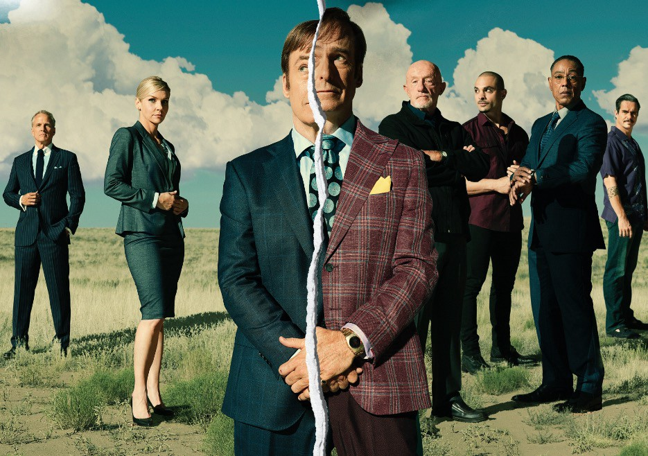

About Better Call Saul
Better Call Saul is an American crime drama television series created by Vince Gilligan and Peter Gould. It is a spin-off, prequel, and a sequel to Gilligan's previous series, Breaking Bad.
Set primarily in the early to middle part of the first decade of the 2000s in Albuquerque, New Mexico, the series develops Jimmy McGill (Bob Odenkirk), an earnest lawyer and former con artist,
into a greedy criminal defense attorney known as Saul Goodman. Also shown is the moral decline of retired police officer Mike Ehrmantraut (Jonathan Banks), who becomes closely affiliated with
The Cartel and Gustavo Fring (Giancarlo Esposito) to support his granddaughter and her widowed mother.
